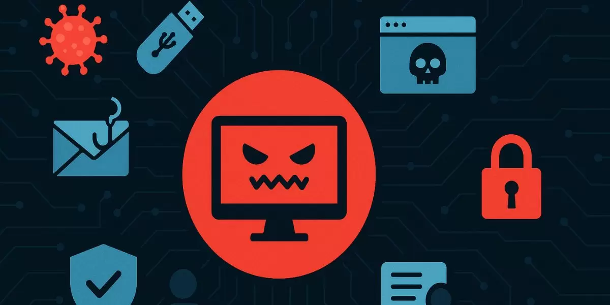

Exploring Key Cybersecurity Concepts
The CIA Triad
This is a foundational model that guides security policies. It stands for Confidentiality, Integrity, and Availability.
- Confidentiality: Ensuring that data is private and only accessible to authorized users.
- Integrity: Maintaining the accuracy and consistency of data, ensuring it hasn't been tampered with.
- Availability: Guaranteeing that information and systems are accessible to authorized users when needed.
Common Cyber Attacks
Understanding threats is the first step to defense. Here are some of the most frequent types of attacks.

Malware Attacks
Malicious software (viruses, trojans, spyware) designed to disrupt operations or steal information.
Phishing Attacks
Tricking users into revealing sensitive information through deceptive emails or websites.
Password Attacks
Injecting malicious SQL code into a web query to manipulate or retrieve database data.

Randsomware Attacks
Overwhelming a server with traffic to make it unavailable to legitimate users.
Defensive Strategies
These are proactive methods used to identify and fix security weaknesses before they can be exploited.
- Vulnerability Assessment: Systematically identifying, classifying, and prioritizing security vulnerabilities in systems.
- Penetration Testing (Pentesting): A simulated cyberattack against your own system to check for exploitable vulnerabilities.